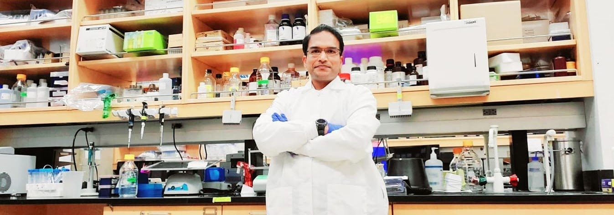
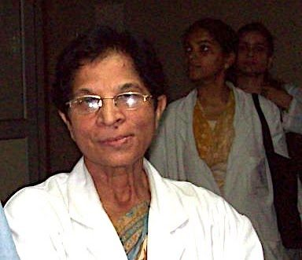
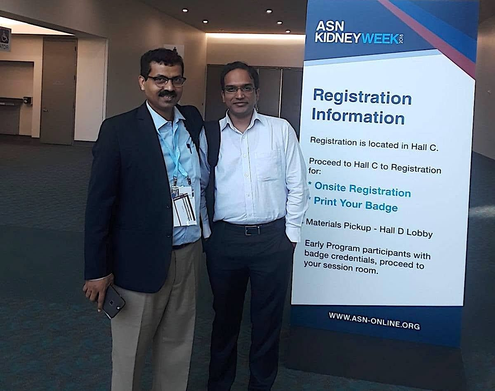
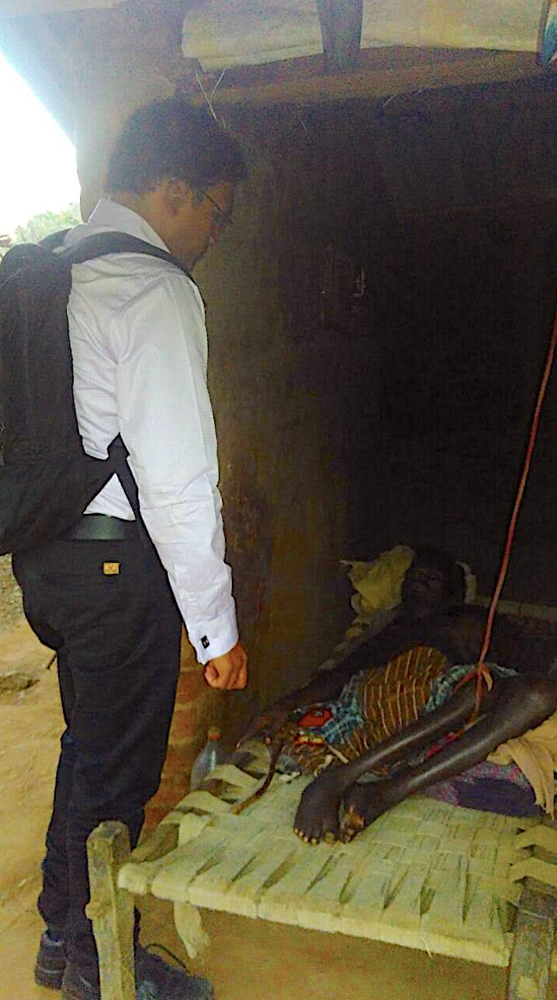
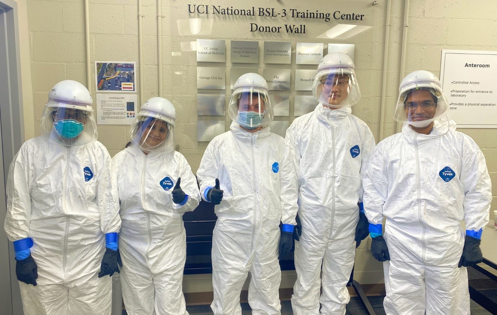
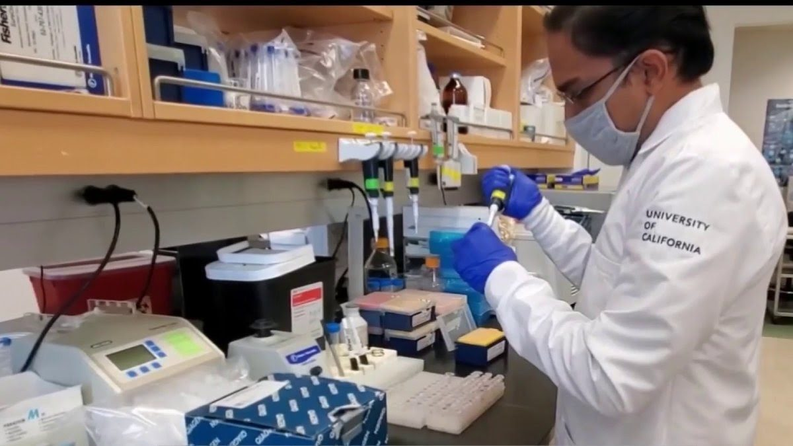
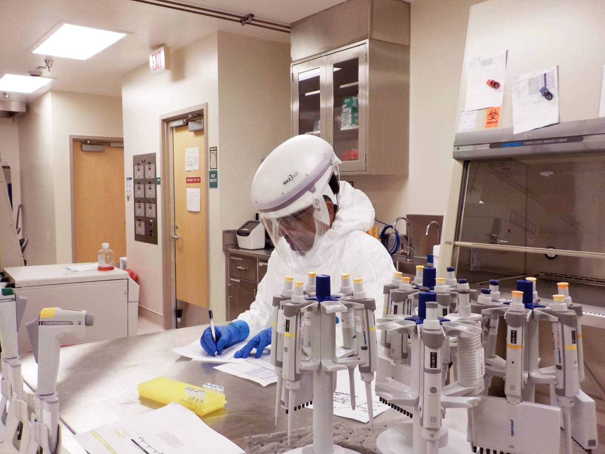

Precision antiviral
immunity
From protective human immune signatures to vaccines and immunotherapies. A research plan for the next three to five years.
Milestones and plan ↓
Vision
My laboratory will define the immune programs that let some individuals control viral infection without severe disease, and convert those programs into deployable vaccines and immunotherapies.
The central premise is that durable protection depends not only on neutralizing antibodies but on well-placed, polyfunctional B-cell and T-cell responses, especially tissue-resident memory (TRM) cells, aimed at viral targets that evolution cannot easily change. Combining human immunogenetics, single-cell multi-omics, computational antigen discovery and preclinical validation, the program moves from protective human signatures to intervention and back again.
Over three to five years the Laboratory for Precision Antiviral Immunity and Vaccines will build three integrated thrusts: broad respiratory-virus vaccines from conserved protective antigens; tissue-targeted immunotherapies for persistent viral reservoirs and recurrent disease; and computational immunogenetics that explains why antiviral responses become protective, exhausted or inflammatory.
Foundation
The plan grows from work I have led or co-led over eight years at UC Irvine, and from a decade of human immunogenetics before that.
- Pan-coronavirus vaccines. Conserved B-cell, CD4 and CD8 T-cell targets, evaluated as multi-epitope and multi-antigen constructs on mRNA-LNP, adenoviral, AAV and peptide platforms (J Immunol 2021; Front Immunol 2024; npj Vaccines 2026).
- Mucosal and tissue-resident immunity. TRM cells, chemokine axes, immune exhaustion and prime-pull-keep strategies in ocular and genital herpes models (J Immunol 2020; Sci Rep 2020).
- Persistent viral disease. SARS-CoV-2 reservoirs, dysfunctional antiviral lymphocytes and candidate T-cell immunotherapies for Long COVID (Viruses 2025).
- Translational breadth. Human PBMCs; HLA-transgenic, mouse, hamster, guinea pig and rabbit models; BSL-3 and ABSL-3 workflows; single-cell and bulk RNA-seq; CyTOF and flow cytometry; immunoinformatics.
- Human immunogenetics. KIR and HLA genetics in transplantation, autoimmunity and kidney disease, including the MASS KIR Analyzer software.
Transplantation immunology and histocompatibility
Before turning to vaccines, I spent six years in histocompatibility and immunogenetics at a tertiary renal transplantation center, and I am ready to help set up and lead an HLA laboratory that serves kidney transplantation.
My doctoral and early postdoctoral work was in the Departments of Medical Genetics and of Nephrology and Renal Transplantation at the Sanjay Gandhi Postgraduate Institute of Medical Sciences, Lucknow. I then trained as a Visiting Fellow in the Histocompatibility Laboratory of the Institute of Immunology, University Hospital Essen, Germany (2016 to 2017), and at the 12th International Summer School on Immunogenetics run by ASHI and APHIA (2015). I serve as an International Committee Member of the American Society for Histocompatibility and Immunogenetics.


Laboratory methods
| Area | Methods |
|---|---|
| HLA typing | Molecular typing by sequence-specific oligonucleotide probes (SSOP), sequence-specific primers (SSP) and DNA sequencing; serological typing by complement-dependent lymphocytotoxicity. |
| Antibody assessment | Panel-reactive antibody testing by ELISA; detection of donor-specific antibodies (DSA); Luminex-based platforms. |
| Donor-recipient compatibility | Crossmatch strategies, mixed lymphocyte reaction, and KIR genotyping with HLA class I ligand matching. |
| Post-transplant immunity | Antiviral T-cell assays (flow cytometry, ELISpot, CyTOF) relevant to infections such as CMV and SARS-CoV-2 in transplant recipients. |
Research contributions
- NK-cell receptors and graft outcome. KIR-HLA ligand incompatibility in renal transplantation (Indian J Nephrol 2015) and KIR3DL1/3DS1 alleles with HLA-Bw4 ligands in end-stage renal disease and long-term allograft survival (Gene 2017), presented in the Histocompatibility session of the 26th International Congress of The Transplantation Society, Hong Kong (2016). KIR genotypes from North Indian patients with end-stage renal disease were deposited in the Allele Frequency Net Database.
- Genetic markers of rejection. VEGF polymorphisms in acute rejection (Nephron 2015) and long-term kidney allograft outcomes (Kidney Int Rep 2018); HLA-G variants and expression in end-stage renal disease and acute rejection (Tissue Antigens 2013; Hum Immunol 2014).
- Infection after transplantation. Activating KIR genes and cytomegalovirus infection in renal transplant recipients (J Genet Genome Res 2014), and HLA polymorphism with COVID-19 in renal transplant recipients (Vaccines 2022).
- Kidney disease biomarkers. KIR distribution and susceptibility biomarkers in end-stage renal disease (Hum Immunol 2013; Nephrology 2016), and microRNA-target-SNP networks in renal pathophysiology (MicroRNA 2017).
- Teaching the field. Invited talk and CME on HLA typing methods and crossmatch strategies in renal transplantation, Transplantation Immunology Workshop, 54th Annual Conference of the Indian Society of Nephrology (2025); CME on HLA immunogenetics in COVID-19, Indian Society of Nephrology (2024).
What I would build
A histocompatibility and immunogenetics program that supports renal transplantation day to day, including HLA typing, antibody screening, DSA monitoring and crossmatch interpretation, and that is also a research engine. Its research would cover KIR and NK-cell biology in graft outcome, population-specific HLA diversity, and antiviral T-cell immunity in immunosuppressed recipients, which links directly to my vaccine work.
Public health and One Health
Much of my work looks beyond the laboratory, to who gets sick, where, and why. It ranges from field studies of kidney disease in rural India to population-scale estimates of disease burden.
Chronic kidney disease of unknown etiology (CKDu)

In projects supported by the Indian Council of Medical Research, the Indian Society of Nephrology and LaRenon, I worked with patients and communities in tribal regions of India affected by CKDu, a form of kidney failure not explained by diabetes or hypertension. I carried out a genome-wide association study of 96 participants (56 cases, 40 controls; eGFR and urine protein as covariates). Pathway analysis implicated insulin-receptor, PDGF, chemokine, cytokine, interferon, B-cell receptor and NOTCH signaling. Immunohistochemistry and ELISA on renal biopsies showed higher NLRP4, KAZN and PRKN expression in patients. Trace-element analysis by mass spectrometry and heat-stress assessment examined environmental causes. To my knowledge, this was the first study of CKDu-associated genes in the Indian subcontinent; I presented it at the 18th Indian Society of Nephrology Conference (2018).
Global Burden of Disease
As a collaborator in the Global Burden of Disease Study led by the Institute for Health Metrics and Evaluation, I am a consortium author on 20 papers. They include the global burden of chronic kidney disease, 1990 to 2017 (Lancet 2020), tuberculosis (Lancet Infect Dis 2018), and comparative risk assessment of 84 behavioral, environmental, occupational and metabolic risks (Lancet 2018). Others cover disease from occupational exposures (Occup Environ Med 2020), the health-related Sustainable Development Goals (Lancet 2018), and mapping of child growth failure across low- and middle-income countries (Nature 2020).
A One Health perspective
- Pandemic preparedness at the animal-human interface. My pan-coronavirus vaccine work targets B-cell and T-cell epitopes conserved between human and animal coronaviruses, to anticipate spillover rather than chase variants (J Immunol 2021).
- Environment, work and kidney health. The CKDu program links heat stress, environmental trace elements and host genetics in affected communities.
- Tropical infection. Activating KIR-like NK-cell receptors in complicated malaria (Acta Trop 2018) and histidine-rich protein 2 repeat variability that can mislead Plasmodium falciparum diagnosis (Indian J Med Microbiol 2024).
In a new program, this experience supports cohort design with clinical and community partners, population-aware immunogenetics, and research that answers to regional health priorities.
Artificial intelligence and data science
In 2026 I completed formal graduate training in artificial intelligence and data science, adding to the computational methods I have used in immunogenetics and immunology for more than a decade.
Training
| Year | Program |
|---|---|
| 2026 | Master of Information and Data Science (MIDS), School of Information, University of California, Berkeley. |
| 2026 | Master of Science in Artificial Intelligence, Woolf, through the Udacity Institute of AI and Technology. |
| 2026 | Executive Education in AI and digital transformation, Harvard Business School. |
Where I apply it
- AI in vaccinology. Co-author of two 2025 reviews in Frontiers in Artificial Intelligence: on artificial intelligence and machine learning in the development of vaccines and immunotherapeutics (Front Artif Intell 2025), and on AI-, organoid- and organ-on-chip-powered models to improve preclinical testing of vaccines and immunotherapeutics (Front Artif Intell 2025).
- Interpretable models of immune states. Thrust 3 of my research plan builds multimodal classifiers constrained by immunological mechanism, with nested cross-validation, batch-aware modeling, feature attribution and held-out validation.
- Immunoinformatics and antigen selection. Epitope prediction, HLA-binding and conservation analyses used to choose B-cell, CD4 and CD8 T-cell targets for pan-coronavirus vaccines (J Immunol 2021).
- High-dimensional biological data. Single-cell and bulk transcriptomics, CyTOF, genome-wide association and pathway analysis, and the MASS KIR Analyzer software for KIR gene content.
What I would build
A laboratory where computation and experiment answer the same question: data pipelines and models that rank vaccine antigens and predict protective immune states, tested at the bench and in prospective cohorts, with responsible data governance for human samples from the start.
Three thrusts
Thrust 1. Broad respiratory-virus vaccines
Vaccine constructs chosen from protective human immune data, with population-aware HLA coverage, should give broader and more durable protection than sequence conservation alone.
Antigenic evolution and uneven prior exposure limit vaccines aimed narrowly at surface antigens. This thrust links antigen selection to immune phenotypes of people who naturally control disease, builds regional HLA diversity into design from the start, and creates a modular pipeline that can be redirected when a new respiratory pathogen emerges.
| Aim | Approach | Year 3 deliverable |
|---|---|---|
| 1.1 Protective-antigen atlas | Integrate viral conservation, HLA binding, human PBMC reactivity, TCR features and existing datasets for coronaviruses, RSV and influenza. | Ranked antigen and epitope panels with regional HLA coverage. |
| 1.2 Modular candidates | Build multi-antigen and multi-epitope candidates; compare protein, peptide and nucleic-acid delivery. | Two lead constructs meeting immunogenicity and manufacturability gates. |
| 1.3 Breadth and mechanism | Quantify antibodies, TFH, cytotoxic and TRM-like responses in homologous or surrogate models. | Mechanistic correlate package and lead-candidate selection. |


Thrust 2. Tissue-targeted immunotherapy
Prime-pull-keep interventions that expand conserved antigen-specific T cells, recruit them to the affected tissue and help them stay there should reduce viral persistence and inflammatory injury.
Persistent antigen, anatomic reservoirs and recurrent reactivation can coexist with abundant but exhausted circulating lymphocytes. The first anchors are recurrent HSV and post-acute SARS-CoV-2 sequelae, where my expertise is strongest; the platform can later extend to other persistent or reactivating viruses once mechanistic milestones are met.
| Aim | Approach | Decision point |
|---|---|---|
| 2.1 Reservoir-immune map | Profile viral RNA and antigen, T-cell exhaustion, tissue-homing receptors, chemokines and inflammatory programs. | Advance disease settings with reproducible reservoir-immune coupling. |
| 2.2 Therapeutic design | Combine conserved antigens with chemokine or delivery strategies that favor recruitment and retention of functional CD4 and CD8 T cells. | Advance candidates that improve function without excess inflammation. |
| 2.3 Proof of mechanism | Measure reservoir burden, tissue pathology, immune durability and functional outcomes in approved preclinical models. | Nominate one therapeutic package for advanced development. |
Thrust 3. Computational immunogenetics
Multimodal models constrained by immunological mechanism, and validated prospectively, should classify immune states and reveal intervention-ready targets more reliably than unconstrained prediction.
Protective and pathogenic antiviral immunity emerge from host genotype, exposure history, cell state, tissue context and viral variation. With clinical partners in the host region, this thrust will characterize antiviral immunity in local populations, with consent, biospecimen, data-governance and return-of-results policies in place before enrollment.
| Work package | Methods | Output |
|---|---|---|
| 3.1 Cohort framework | Partner-ready protocols for PBMC and serum collection, metadata, HLA typing, immune phenotyping and longitudinal follow-up. | Harmonized data dictionary, SOPs, ethics templates and a pilot cohort. |
| 3.2 Multi-omic integration | Single-cell RNA and TCR profiling, protein and chemokine measurements, serology, viral genomics and clinical covariates. | Cell-state and clonotype maps that separate protection, exhaustion and inflammation. |
| 3.3 Interpretable AI | Nested cross-validation, batch-aware modeling, feature attribution and held-out validation. | A validated classifier and mechanistically supported targets. |
Durable protection depends not only on neutralizing antibodies, but on well-placed, polyfunctional T cells aimed at targets that evolution cannot easily change.
From the research statement
Milestones and plan
The program is staged so each phase de-risks the next, with predefined go or no-go criteria for antigen recognition, effect size, reproducibility, safety and manufacturability.
| By the end of | Scientific milestone | Program milestone |
|---|---|---|
| Year 1 | Protective-antigen shortlist; validated assays; pilot multi-omic dataset. | Laboratory operational; team trained; partner and ethics agreements started. |
| Year 2 | First vaccine and immunotherapy candidates; cohort pilot; single-cell atlas. | Major manuscripts, external grant submissions and invention disclosure if warranted. |
| Year 3 | Lead respiratory and tissue-targeted candidates selected. | Multi-investigator grant and wider collaborations. |
| Years 4 and 5 | Independent validation, advanced preclinical package and a compact biomarker signature. | Sustained funding and a defined translational pathway. |
Risks, planned for
Each foreseeable bottleneck has a parallel route, so the program keeps moving if one path stalls.
| Risk | Mitigation |
|---|---|
| Dependence on high-containment studies | Stage discovery and immunogenicity work in-house; use qualified containment partners; keep surrogate and noninfectious routes. |
| Clinical-cohort delays | Start with archived or partner-provided specimens; use multicenter-compatible SOPs; run parallel workstreams. |
| Immunogenicity without protection | Mechanistic gates, tissue-localization measures, orthogonal models and modular delivery options. |
| Model overfitting | Pre-specified outcomes, biologically informed dimension reduction, nested validation and required replication. |
Rigor and team
Rigor is built into the design, not added at the end.
- Randomization, blinding where feasible, sex as a biological variable, appropriate replication and independent confirmation.
- Version-controlled computational workflows, locked confirmatory analysis plans and batch-effect assessment.
- FAIR data practices where consent and regulation permit, with careful protection of participant information.

A lean starting group
A computational immunogenomics postdoctoral fellow, an experimental immunology postdoctoral fellow or senior scientist, a technician and two to three graduate students, with collaborators in antiviral genetics, single-cell analysis, RNA delivery, biomaterials, imaging and AI. Clinical and containment partnerships are formalized early.
Funding and translation
Proposals package the program into focused modules: conserved respiratory-virus antigens, tissue-targeted antiviral immunotherapy, and interpretable multi-omic immune classifiers. Funding will be pursued through institutional mechanisms, national health and innovation programs, international infectious-disease funders and industry. Current support includes a 2025 20/20 Society Pilot Research Grant (PI) for HSV-1 latency-associated biomarker screening in recurrent ocular herpes, and several NIH R01, R21 and R43 proposals are under review.
Five-year outcomes
- A reusable protective-immunity engine linking human phenotypes, HLA-aware antigen selection, multimodal immune profiling and preclinical testing.
- At least one broadly protective respiratory-virus candidate and one tissue-targeted therapeutic candidate supported by mechanistic evidence.
- A regionally relevant immunogenomics framework, developed with clinical partners and governed for responsible, reproducible analysis.
- An externally funded laboratory, and graduate and postdoctoral alumni ready to lead interdisciplinary research.